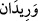

yine şeytanın tahriki ile olmuştur.
Büyüklerden biri şöyle der: Şeytan için peygamberlerin bâtınına ve havatırına
ulaşmaya bir yol söz konusu değildir. Şeytanın bunlarda bir nasibi yoktur. O
peygamberlere sadece zâhirî duyular yönünden gelebilir. Peygamberler ise onun
söylediğini asla yapmazlar. Allah’ın ilmi dâhilinde şeytandan korunmuş velîler de
vardır. Böyle bir durumda olan velî şeytanın ilkâ ettiği vesveseyi yapmaktan
korunmuştur. Yoksa bu husus, velinin, vesvesenin kalbine ulaşmaktan korunması
anlamında değildir. Çünkü velîler peygamberlerin aksine şeriat getirmezler.
Peygamberler ise şeriat getirdikleri için bâtınları da korunmuştur.
Yine büyüklerden biri şöyle der: Âdemoğlundan hiç kimse yok ki her gün ona yetmiş
bin havâtır gelmesin. Bu her gün beyt-i mamura giren meleklerin sayısından az ya da
fazla değildir. Her bir kimsenin havâtırından her gün yetmiş bin melek yaratılır. Bunlar
beyt-i mamur tarafına yükselirler. Her gün beyt-i mamurdan çıkan yetmiş bin melek
havâtırdan yaratılan meleklerle buluşurlar. Onların zikirleri havâtırından yaratılmış
oldukları kimseler için istiğfardır. Ancak kalbi devamlı Allah’ın zikriyle mamur hâlde
olan kimsenin havâtırından yaratılan meleklerle bu makamda olmayan bir kimsenin
havâtırından yaratılan meleklerin durumu aynı değildir. Gerekli gereksiz faydalı
faydasız bütün havâtır bu bakımdan müsâvîdir. Kalplerin hepsi bu beyt-i mamurdan
yaratılmıştır. Bunlar aynı şekilde mamur bir hâlde devam etmektedir. Havâtırdan
meydana gelen her bir melek Allah’ın ilminde nazar edilmesi gereken güzel bir sûret
hâlindedir. O, hadd-i zâtında tesbih eden bir melek olsa ve kendisinin yaratıldığı
havâtırı bilmese de..
“Biz, ona şah damarından daha yakınız.” İnsana şah damarından daha yakın olandan
onun hâlini biz daha iyi bilmekteyiz. İlim olarak ona olan yakınlığını mecazen zât olarak
ona yakınlıkla ifade buyurmaktadır. Çünkü zâtî yakınlık ilmî yakınlığı gerektirmektedir.
Burada melzûm, lâzım üzerine ıtlak buyrulmuştur. Yani zâtî yakınlık zikredilmiş, ilmî
yakınlık kasdedilmiştir.
Âyetteki şah damarı ifadesi yakınlığın çok ileri seviyede olduğuna bir misaldir.
Mesela Araplar şöyle der: “O bana elbisemin bağı kadar yakın.”
“Habl” damar demektir. Damar şekil itibariyle ipe benzetilmiştir. Hablü’l-verîd
ifadesi izafet-i beyâniyyedir. Yani bu damarın şah damarı olduğunu beyan etmektedir.
Zemahşerî buradaki izafetin “için” mânâsında olduğunun câiz olduğunu ifade etmiştir.
Ayrıca burada “habl” kelimesinin hakiki anlamı olan “ip” mânâsında kabul edildiği
takdirde “gümüş gibi su” örneğinde olduğu gibi “ip gibi damar” anlamına da gelebilir.
“
” boynun ön tarafında, boynu iki tarafından saran, kalp damarına (aort) bitişik
iki damardır. Kalp damarı, kesilmesi durumunda insanın hayatının sona ereceği bir
damardır. Bu iki damar insanın başından gelmektedir.
Verîd kelimesi “vârid/gelen” anlamındadır. Verîd’in hayvânî ruhun o kanaldan gelmesi
sebebiyle bu şekilde isimlendirildiği de söylenmiştir. Bu durumda verîd kelimesi
“mevrûd/kendisine gelinen” anlamına gelir.